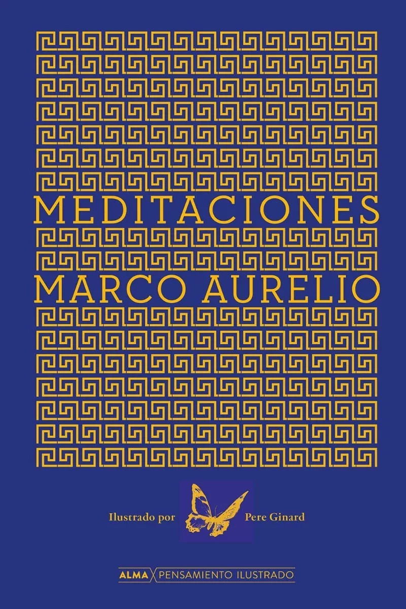

Nombre: Meditaciones de Marco Aurelio
Autor : Marco Aurelio

Marco Aurelio escribió sus Meditaciones durante los descansos de sus actividades políticas y bélicas. Estas reflexiones tenían el propósito de recordarle las máximas fundamentales del estoicismo y de ayudarle a aplicarlas en su día a día para no desviarse del objetivo primordial: ser mejor persona.
